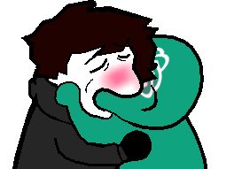

Acerca de la Pagina
la pagina fue hecha con ayuda de CHADGPT (chatgpt) y le pedi una recopilacion de lo que hicimos
Estructura básica del HTML: Creamos la estructura básica de tu página HTML utilizando etiquetas como < html >, < head >, < body >, y vinculamos tu archivo CSS externo.
Diseño del encabezado: Creamos un encabezado (< header >) que incluía un logo y un menú de navegación horizontal.
Creación del menú de navegación: Creamos un menú de navegación con enlaces a diferentes partes de tu página y, en una de las páginas, agregamos enlaces a páginas externas.
Estilización con CSS: Aplicamos estilos CSS para darle formato y diseño a tu página, incluyendo colores, fuentes, márgenes y espaciado.
Agregar imágenes: Agregamos imágenes, como el logo y las imágenes para los enlaces a páginas externas, y aplicamos estilos para ajustar su tamaño y forma
Creación de secciones: Creamos secciones en tu página, como la sección de "Enlaces Externos", para organizar y presentar el contenido de manera clara y estructurada.
Ajustes de diseño: Realizamos ajustes en el diseño y la disposición de los elementos para lograr el aspecto deseado y mejorar la experiencia del usuario
Optimización y pruebas: Revisamos y optimizamos el código para garantizar que la página funcione correctamente en diferentes dispositivos y navegadores, y probamos la funcionalidad de los enlaces y las imágenes.
Personalización adicional: Proporcionamos sugerencias para personalizar aún más tu página, como agregar contenido sobre la creación de la página utilizando nuestra colaboración como parte de la sección de la página de inicio.
